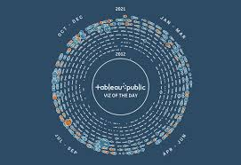

In this project, I undertook the task of ensuring data quality and integrity by implementing various data cleaning techniques using MySQL. Leveraging my expertise in SQL and database management, I addressed common data issues such as missing values, duplicates, inconsistencies, and outliers.
In this project, I embarked on an exploratory data analysis journey using MySQL to uncover valuable insights and patterns within a dataset. Leveraging my expertise in SQL and database querying, I delved deep into the data to gain a comprehensive understanding of its characteristics and underlying trends.

I utilized Tableau to create dynamic and interactive visualizations that shed light on key insights within a dataset. Harnessing the power of data visualization, I transformed raw data into compelling visuals that facilitate understanding and drive actionable decision-making.
I developed an automated cryptocurrency trading system using Python and integrated APIs. Leveraging the power of algorithmic trading and real-time data, I created a sophisticated trading bot capable of executing trades autonomously based on predefined strategies and market conditions.

I created dynamic dashboards and reports that provide actionable insights from complex datasets. By integrating diverse data sources and leveraging advanced analytics, I facilitated data-driven decision-making for enhanced organizational performance.
I utilized Python to develop a web scraping tool that extracts valuable product information from Amazon's website. By leveraging libraries such as BeautifulSoup and Scrapy, I automated the process of gathering product details, prices, reviews, and ratings, empowering businesses to make informed decisions based on competitive analysis and market trends.